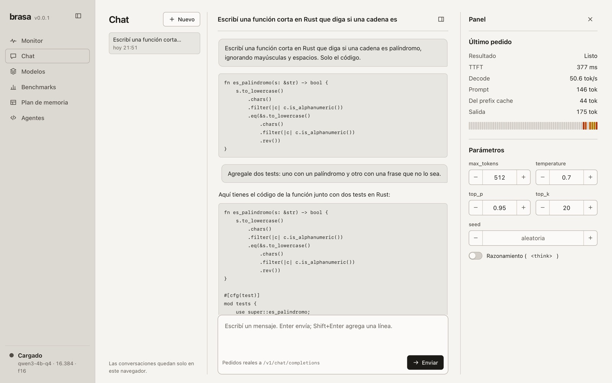
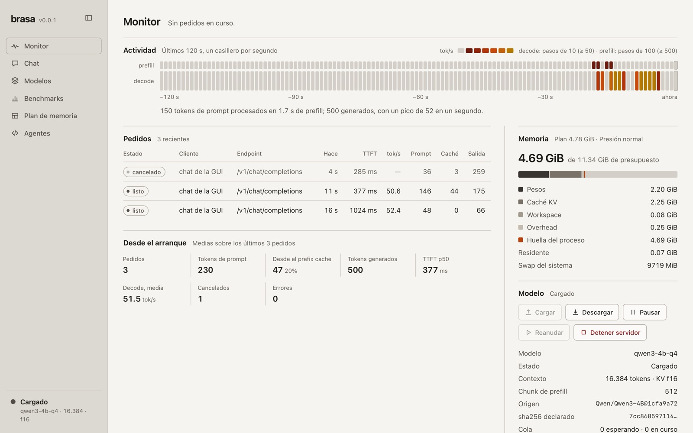
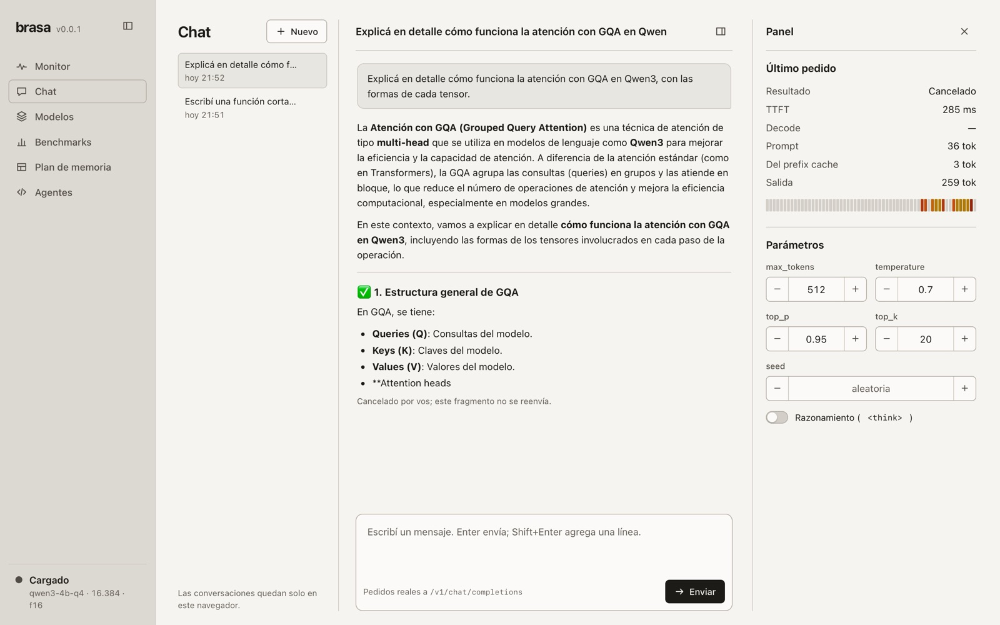

Tu agente de código, contra un modelo que corre en tu Mac.
Your coding agent, against a model that runs on your Mac.
Brasa es un engine de inferencia propio, en Rust sobre Metal y sin llama.cpp, MLX ni Ollama en el camino caliente. Expone una API local compatible con OpenAI y Anthropic, y una GUI embebida, para que Claude Code, Codex, Cline u OpenCode trabajen contra el modelo local.
Brasa is its own inference engine, written in Rust on Metal and with no llama.cpp, MLX or Ollama in the hot path. It exposes a local API compatible with OpenAI and Anthropic, plus an embedded GUI, so Claude Code, Codex, Cline or OpenCode can work against a local model.
Ver el repositorio View the repository Se compila desde el código; no hay instalador ni binarios publicados. Built from source; there is no installer and no published binaries.
Patchbay
brasa connect · imprime la configuración, no toca tus archivos
brasa connect · prints the config, never touches your files
Elegí un agente y parcheá el engine.
Pick an agent and patch the engine.
Entrada del engine
Engine input
brasa connect claude-code
Usa la API Messages de Anthropic; la configuración sugiere limitar las herramientas y fijar el contexto real del perfil.
Habla la API Responses de OpenAI; imprime sus dos archivos de configuración, incluido el perfil con la ventana de contexto.
Usa un proveedor compatible con OpenAI; imprime la Base URL, la API key de prueba, el modelo y el contexto.
Usa un proveedor compatible con OpenAI; imprime la Base URL, la API key de prueba, el modelo y el contexto.
Uses Anthropic's Messages API; the config suggests limiting tools and setting the profile's real context.
Speaks OpenAI's Responses API; it prints its two config files, including the profile with the context window.
Uses an OpenAI-compatible provider; it prints the Base URL, a test API key, the model and the context.
Uses an OpenAI-compatible provider; it prints the Base URL, a test API key, the model and the context.
Especificaciones
Specs
lo que hay adentro del rack
what's inside the rack
- Engine propioOwn engine
Rust sobre Metal, con kernels y planner propios. Nada de llama.cpp, MLX ni Ollama en el camino caliente.
Rust on Metal, with its own kernels and planner. No llama.cpp, MLX or Ollama in the hot path.
Metal - API compatibleCompatible API
Chat Completions y Responses (OpenAI), y Messages (Anthropic), con streaming, cancelación y tool calling.
Chat Completions and Responses (OpenAI), and Messages (Anthropic), with streaming, cancellation and tool calling.
/v1 - Planner de memoriaMemory planner
Calcula pesos, KV y workspace antes de cargar; si no entra, baja el contexto o rechaza, sin swap silencioso.
Computes weights, KV and workspace before loading; if it does not fit, it lowers the context or refuses, with no silent swap.
PresupuestoBudget - GUI embebidaEmbedded GUI
Dashboard en
/uiservido por el propio binario: sin CDN, sin fuentes remotas, sin analytics.Dashboard at
/ui/ui, served by the binary itself: no CDN, no remote fonts, no analytics. - CatálogoCatalog
Manifiestos con repo, revisión y sha256 por archivo.
brasa models,verify,pully unrmacotado a la carpeta de modelos.Manifests with repo, revision and a sha256 per file.
sha256brasa models,verify,pull, and armbounded to the models folder. - Conversión nativaNative conversion
De safetensors a
.brasaen Rust, sin Python en el binario.From safetensors to
nativonative.brasain Rust, with no Python in the binary. - Prefix cachePrefix cache
Los agentes reenvían el mismo contexto en cada turno; la KV del prefijo se reutiliza entre pedidos.
Agents resend the same context every turn; the prefix KV is reused across requests.
ReúsoReuse
Presupuesto de memoria
Memory budget
vista esquemática del plan
schematic view of the plan
El cálculo va antes de reservar memoria.
The math runs before memory is reserved.
El planner suma pesos, KV cache, workspace y un margen del sistema, y compara contra lo que la máquina puede dar. Si el contexto no entra, lo baja o rechaza con un mensaje claro, y el plan queda explícito antes de tocar la memoria.
The planner adds up weights, KV cache, workspace and a system margin, and compares against what the machine can give. If the context does not fit, it lowers it or refuses with a clear message, and the plan is explicit before any memory is touched.
Las cifras reales salen de brasa plan. Acá no van velocidades ni tamaños: solo el orden de las piezas.
Real numbers come from brasa plan. No speeds or sizes here: just the order of the pieces.
GUI
capturas reales del dashboard
real dashboard captures
Monitor en vivo, chat con historial, modelos, benchmarks, plan de memoria y conexión de agentes, servidos en 127.0.0.1:8080/ui desde el mismo proceso que atiende la API.
Live monitor, chat with history, models, benchmarks, memory plan and agent connection, served at 127.0.0.1:8080/ui by the same process that serves the API.



Rendimiento
Performance
metodología y reportes
methodology and reports
Acá no hay cifras: en este proyecto nada se afirma sin medir. Los números están en el reporte de benchmarks, con chip, RAM, macOS y el commit del engine con el que se midieron.
No figures here: in this project nothing is claimed without measuring it. The numbers live in the benchmark report, with the chip, RAM, macOS and the engine commit they were measured on.
Instalación
Install
compilado desde el repositorio
build it from the repo
# Requisitos: macOS sobre Apple Silicon y una toolchain de Rust.
git clone https://github.com/Lautaro005/brasa
cd brasa
cargo build --release -p brasa-cli
# Diagnóstico, pesos y conversión al formato nativo.
./target/release/brasa doctor
./target/release/brasa pull qwen3-4b-q4
./target/release/brasa convert models/qwen3-4b-hf models/qwen3-4b-q4
# Servir contra un agente (perfil 16K con KV Q8).
./target/release/brasa serve qwen3-4b-q4 --ctx 16384 --kv q8_0
./target/release/brasa connect claude-code# Requirements: macOS on Apple Silicon and a Rust toolchain.
git clone https://github.com/Lautaro005/brasa
cd brasa
cargo build --release -p brasa-cli
# Diagnostics, weights and conversion to the native format.
./target/release/brasa doctor
./target/release/brasa pull qwen3-4b-q4
./target/release/brasa convert models/qwen3-4b-hf models/qwen3-4b-q4
# Serve it to an agent (16K profile with Q8 KV).
./target/release/brasa serve qwen3-4b-q4 --ctx 16384 --kv q8_0
./target/release/brasa connect claude-codeEl perfil de agente recomendado es 16K con KV Q8; el servidor escucha en 127.0.0.1 y no tiene autenticación, así que no lo expongas fuera de la máquina.
The recommended agent profile is 16K with Q8 KV; the server listens on 127.0.0.1 and has no authentication, so do not expose it beyond your machine.